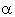
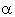

|
4.1. Исследование устойчивости.
Исследуем устойчивость явной разностной схемы (9.3),
аппроксимирующей дифференциальное уравнение (9.1), с помощью спектрального метода.
Для этого отбрасываем член , наличие которого, как известно,
не оказывает влияния на устойчивость разностной схемы, и представляем решение в виде гармоники:
Далее, упрощаем полученное выражение, деля левую и правую его части на :
Используя зависимости (3.9), (3.10), получаем формулу
из которой выражаем  :
С учётом необходимого условия устойчивости разностных схем (3.8) имеем:
В полученном двойном неравенстве правое условие выполняется автоматически.
Поэтому рассмотрим более подробно левое условие:
Чтобы гарантировать устойчивость разностной схемы (9.3) независимо от значений , :
С учётом необходимого условия устойчивости разностных схем (3.8) имеем:
В полученном двойном неравенстве правое условие выполняется автоматически.
Поэтому рассмотрим более подробно левое условие:
Чтобы гарантировать устойчивость разностной схемы (9.3) независимо от значений ,
 и , следует перейти к более строгому условию, задавая для максимально возможное значение, равное 1:
Выражение (9.5) является условием устойчивости явной разностной схемы (9.3),
аппроксимирующей дифференциальное уравнение (9.1). В случае отсутствия в уравнении (9.1)
свободного члена (т.е. при k = 0), а также если интервалы между точками по осям x, y и z на
разностной сетке задать равными
выражение (9.5) примет более простой вид:
Сравнивая данное выражение с соотношениями (3.12) и (7.4a) (условиями устойчивости явной разностной схемы
для случаев одномерной и двумерной задач, соответственно), можно получить условие устойчивости явной
разностной схемы, аппроксимирующей N-мерное дифференциальное уравнение параболического типа: и , следует перейти к более строгому условию, задавая для максимально возможное значение, равное 1:
Выражение (9.5) является условием устойчивости явной разностной схемы (9.3),
аппроксимирующей дифференциальное уравнение (9.1). В случае отсутствия в уравнении (9.1)
свободного члена (т.е. при k = 0), а также если интервалы между точками по осям x, y и z на
разностной сетке задать равными
выражение (9.5) примет более простой вид:
Сравнивая данное выражение с соотношениями (3.12) и (7.4a) (условиями устойчивости явной разностной схемы
для случаев одномерной и двумерной задач, соответственно), можно получить условие устойчивости явной
разностной схемы, аппроксимирующей N-мерное дифференциальное уравнение параболического типа:
|